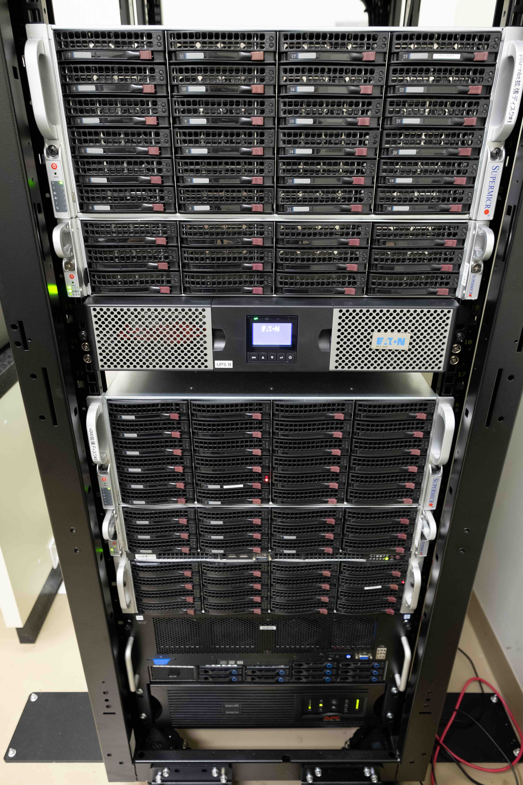
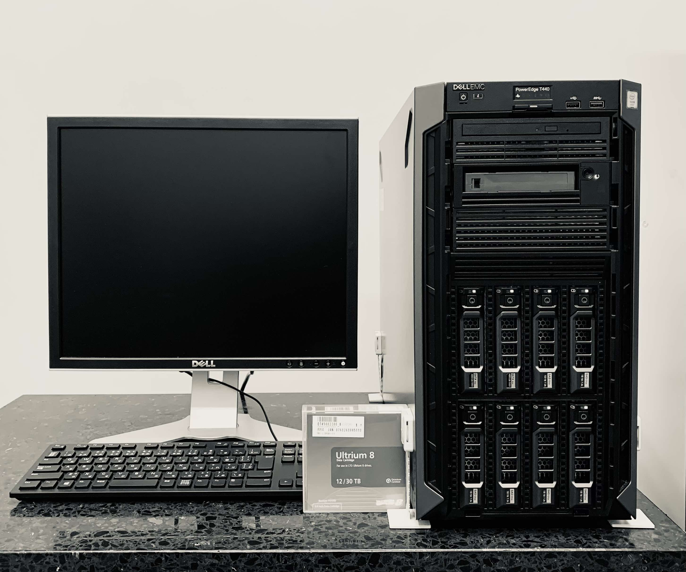

We use programming languages (R, Python, shell), computational algorithms and nf-core pipelines to analyze a variety of NGS (RNA-seq, Hi-C, ChIP-seq/CUTnTag/CutnRUN, ATAC-seq, single-cell data, etc.) and clinical data. High-end Computational & LTO Tape System servers are installed onsite to efficiently analyze and store our data. Our sequencing platform includes 10x Chromium Controler and NextSeq 500 sequencer.
Nabe Takeru two large-memory computational servers: AMD EPYC 7742 2TB RAM/128 CPU threads (top) & Intel E7-8867v4 2TB RAM/72 CPU threads (bottom). Total storage: 256TB HDD. 
Dell PowerEdge T440 LTO Tape storage system allows for an efficient and long-term data storage (>20 years). 
We are currently considering to expand one of our onsite 2TB RAM Takeru servers with two high-end GPUs. Additionally, GPU nodes are available as a part of the YCU Cray XC50 supercomputer platform.